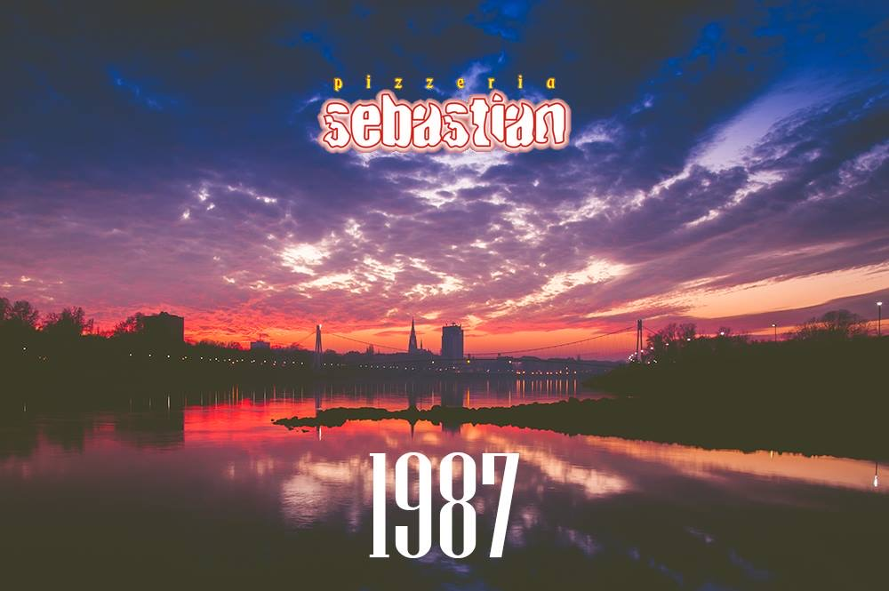
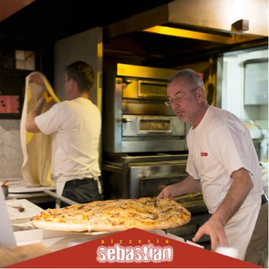
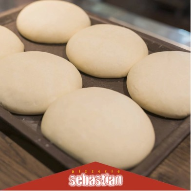

„Pravi sir, ne zamjenski. Originalan kulen. Domaća slanina. I nema lažnjaka.”
Pizzeria Sebastian otvorena je na Sjenjaku davne 1987. godine. Od tada smo podizali standarde i tjerali i druge da poboljšaju kvalitetu namirnica. Naše pizze su izbalansiranog okusa, a namirnice pomno birane i usklađene za svačije nepce.
Kod nas dolaze i mlađi i stariji, svi koji vole dobar talijanski štih. Interijer je moderno uređen, s tridesetak mjesta unutra i dvadesetak na terasi tijekom ljeta.
- 01Četrdesetak pizza, od najljućih i vrlo mesnatih do vegetarijanskih
- 02Kombinaciju koje nema na popisu rado složimo po vašoj želji
- 03Od male pa do gigantice koja oduševi svakoga na čijem se pragu pojavi dostavljač


